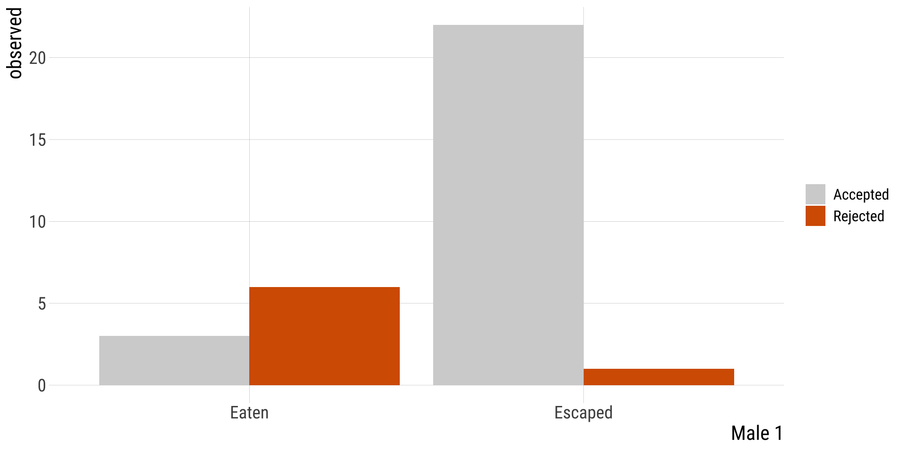

2x2 chi-2, Fisher| Acknowledgments to Y. Brandvain for code used in some slides
Bárbara D. Bitarello
2025-11-26
Outline
Quantifying associations between two categorical variables
Relative risk
Odds-ratio
OR vs RR
Testing associations between categorical variables
\(\chi^2\) contingency test
Fisher’s test
Recap
Contingency analysis estimates and tests for an association between two or more categorical variables.
At the heart of these approaches we are really investigating the independence of variables
RR vs OR
Both \(RR\) and \(OR\) measure the association between two categorical variables when both have only 2 categories.
RR is the probability of an undesired outcome in the treatment group divided by the probability of the same outcome in a control group. Especially appropriate when comparing the probability (risk) of a focal outcome in a response variable between two treatments or groups of subjects
The OR is the odds of “success” (focal outcome) in one group divided by the odds of success in a second group. The explanatory variable defines the groups being compared.
E.g. death in the titanic for women x men. Focal outcome is death. “Treatment” group for RR is women
When to Calculate OR (1/2)?
We often cannot obtain an unbiased estimate of \(p_1\) or \(p_2\).
Odds ratios risk can be calculated even when we don’t have a random sample and we can’t obtain unbiased probabilities!
Thus it is extremely useful for “case-control” studies, as they have a large sample of individuals with rare conditions.
Toxoplasma tricks mice into taking risks so it can find it’s way into cats. Could Toxoplasma be associated with risk taking in humans? Yereli et al. asked this by comparing Toxoplasma prevalence in people who caused car crashes to those who hadn’t.
Find the 95% CI as \(ln(\widehat{OR}) \pm 2 \times SE[ln(\widehat{OR})]\) \(= ln(5.2) \pm 2 \times 0.305\) \(= 1.65 \pm 0.61\)
95% CI of \(ln(\widehat{OR})\) is between 1.04 and 2.26
95% CI of \(\widehat{OR}\) = exp(c(1.04, 2.26)) = 2.8, 9.6
CONCLUSION: \(2.8 < OR < 9.6\) The odds of getting in an accident are plausibly between 2.8 and 9.6 times higher for people with than without Toxoplasma. - Because the 95% CI does not contain 1, we reject the null hypothesis and conclude that there is an association between Toxoplasma infection and car accidents.
In R
The easiest way to calculate OR and CIs in R:
Code
toxoplasma <-matrix(c(61, 16, 124, 169), nrow =2)colnames(toxoplasma) <-c("inf", "not-inf")rownames(toxoplasma) <-c("crash", "no_crash")toxoplasma## inf not-inf## crash 61 124## no_crash 16 169fisher.test(toxoplasma, conf.int = T)## ## Fisher's Exact Test for Count Data## ## data: toxoplasma## p-value = 8e-09## alternative hypothesis: true odds ratio is not equal to 1## 95 percent confidence interval:## 2.79 10.09## sample estimates:## odds ratio ## 5.17
RR 95% CI
The 95% CI for the RR is also not pretty. Based on the same assumptions as the one we showed for \(OR\) (i.e., random samples):
Note that for \(RR\) and \(OR\) there are several available methods and no consensus over which one is best.
The two we showed here use a type of rule of thumb based on the normal distribution. I.e., these are approximations based on the Z distribution.
95% CI in R with resampling (instead of this dreadful equation)
There is another way: we can bootstrap!
By bootstrapping, we approximate the sampling distribution by resampling outcomes with replacement and summarizing variability in this resampling to describe uncertainty.
Testing Associations Between Categorical Variables
\(\chi^2\) Contingency Tests and Fisher’s Exact Test
\(\chi^2\) Contingency Test of Independence
Remember: The multiplication rule states that if two outcomes, A & B are independent, \[P[A \& B] = P[A] \times P[B]\]
So, we have our expectation under the null hypothesis that A & B are independent.
We can test if our deviation from this expectation is unexpected under the null from the \(\chi^2\) test!
This is imply a special case of the \(\chi^2\) goodness of fit where the model described the independence between two (or more) categorical variables
Calculating \(\chi^2\) & Degrees of Freedom
Remember: \(\chi^2\) is the sum of deviations between expectations and observations,\(i\) and \(j\) are rows and columns, respectively.
Note that we only looked at one tail of the \(\chi^2\) distribution.
This does not mean that we only notice an association in one direction.
Both ways to be exceptional (an association between abandonment and poor environments OR an association between abandonment and good environments) yield a strong discrepancy between observations and expectations, and can generate a significant association.
Always quantify effect size, direction, and uncertainty
Bird abandonment with OR and CI
High
Low
Abandoned
1
19
Hatched
53
21
\(OR=(1*21)/(53*19)=0.0209\)
Code
# OR in this function is calculated a bit differently, hence the difference.fisher.test(tab2)## ## Fisher's Exact Test for Count Data## ## data: tab2## p-value = 5e-08## alternative hypothesis: true odds ratio is not equal to 1## 95 percent confidence interval:## 0.000499 0.153059## sample estimates:## odds ratio ## 0.0217
OR 95% CI: \(0.0005 <OR < 0.153\), reject the null.
What if we don’t meet \(\chi^2\) requirements?
Example: Nuptial Gifts
Sometimes, females of the Australian redback spider Latrodectus hasselti eat there mates. Is there anything in it for the males?
Maydianne Andrade tested the idea that eating a male might distract a female & prevent her for remating with a \(2^\text{nd}\) male.
Nuptial Gift: Observed & Expected
Male_2
Male_1
observed
Accepted
Eaten
3
Rejected
Eaten
6
Accepted
Escaped
22
Rejected
Escaped
1

Nuptial Gift: \(\chi^2\) Assumptions?
No more than 20% of categories have Expected \(< 5\)
No category with Expected \(\leq 1\)
We do not meet assumptions
Male_2
Male_1
observed
p.Male1
p.Male2
expected
Accepted
Eaten
3
0.28
0.78
7.03
Rejected
Eaten
6
0.28
0.22
1.97
Accepted
Escaped
22
0.72
0.78
17.97
Rejected
Escaped
1
0.72
0.22
5.03
Fisher’s Exact Test
Generates all possible permutations of your data.
Asks what proportion of configurations result in associations as or more extreme than observed.
\(p-value =\)(Sum of Probabilities of Tables at least as Extreme as Observed Table) / (Sum of Probabilities of All Possible Tables)
The test statistic is calculated based on the hypergeometric distribution (which we won’t go into), which gives the probability of observing the given contingency table under the assumption of independence.
Fisher’s test in R
Code
fisher.test(spider.spread)## ## Fisher's Exact Test for Count Data## ## data: spider.spread## p-value = 6e-04## alternative hypothesis: true odds ratio is not equal to 1## 95 percent confidence interval:## 0.000482 0.329721## sample estimates:## odds ratio ## 0.0279
method
lower.95
upper.95
odds_ratio
p.value
odds ratio
Fisher's Exact Test for Count Data
5e-04
0.3297
0.0279
6e-04
We reject the null hypothesis.
Doing our own permutations
\(1^{st}\) tidy data by going from this on left, to this on right
Both have the same null hypothesis: the outcome is independent from the groups.
Chi-square is generally best for larger samples and Fisher’s is better for smaller samples.
Both can be extended to cases beyond 2x2 with 2 categorical variables, such as 3x2, 2x5, etc
When to use Fisher’s exact test:
20% of categories with Expected values < 5
Any expected value <1
The column or row marginal values are extremely uneven.
Note: Fisher’s ok for all sample sizes. But the # of possible tables grows at an exponential rate and soon becomes unwieldy. So mostly used for smaller sample sizes.